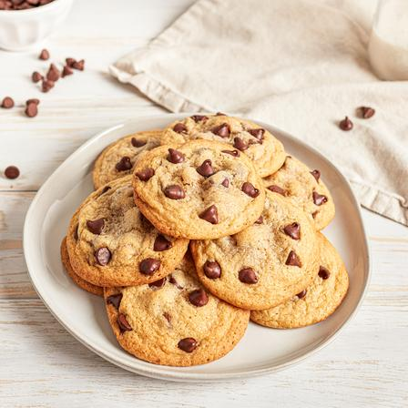

Chocolate Chip Cookies

Description
Chocolate chip cookies are a true classic and the go-to cookie for all occasions!
Ingredients
- 2 1/4 cups all-purpose flour
- 1 teaspoon baking soda
- 1 teaspoon salt
- 1 cup (2 sticks) butter, softened
- 3/4 cup granulated sugar
- 3/4 cup packed brown sugar
- 1 teaspoon vanilla extract
- 2 large eggs
- 2 cups (12 oz. package) semi-sweet chocolate chips
- 1 cup chopped nuts (optional)
Instructions
- Preheat oven to 375F.
- Combine flour, baking soda, and salt in small bowl. Beat butter, granulated sugar, brown sugar, and vanilla extract in large mixer bowl until creamy. Add eggs, one at a time, beating well after each addition. Gradually beat in flour mixture. Stir in chocolate chips and nuts. Drop by rounded tablespoon onto ungreased baking sheets.
- Bake for 9 to 11 minutes or until golden brown. Cool on baking sheets for 2 minutes; remove to wire racks to cool completely.